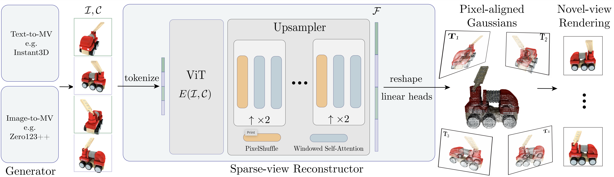

We introduce GRM, a large-scale reconstructor capable of recovering a 3D asset from
sparse-view images in around 0.1s.
GRM is a feed-forward transformer-based model that efficiently incorporates multi-view
information to translate the input pixels into pixel-aligned Gaussians, which are unprojected to create a
set of densely distributed 3D Gaussians representing a scene.
Together, our transformer architecture and the use of 3D Gaussians unlock a scalable and efficient
reconstruction framework.
Extensive experimental results demonstrate the superiority of our method over alternatives regarding both
reconstruction quality and efficiency.
We also showcase the potential of GRM in generative tasks, i.e., text-to-3D and image-to-3D, by
integrating it with existing multi-view diffusion models.

Framework: Given 4 input views, which can be generated from text or a single image, our sparse-view reconstructor estimates the underlying 3D scene in a single feed-forward pass using pixel-aligned Gaussians. The transformer-based sparse-view reconstructor, equipped with a novel transformer-based upsampler, is capable of leveraging long-range visual cues to efficiently generate a large number of 3D Gaussians for high-fidelity 3D reconstruction.
@misc{xu2024grm,
title={GRM: Large Gaussian Reconstruction Model for Efficient 3D Reconstruction and Generation},
author={Xu Yinghao and Shi Zifan and Yifan Wang and Chen Hansheng and Yang Ceyuan and Peng Sida and Shen Yujun and Wetzstein Gordon},
year={2024},
eprint={},
archivePrefix={arXiv},
primaryClass={cs.CV}
}
We would like to thank Shangzhan Zhang for his help with the demo video, and Minghua Liu for assisting with the evaluation of One-2-3-45++. This project was supported by Google, Samsung, and a Swiss Postdoc Mobility fellowship.